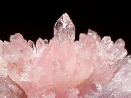

BIENVENIDO A NUESTRA TIENDA ONLINE
Aquí podrás encontrar varios diseños de productos en joyería como collares, pulseras y pendientes a base de diferentes tipos de cuarzo. ¡Pero eso no es todo! también puedes encargar tus productos personalizados de acuerdo a tus gustos al que se le aplicará un mayor costo. Además te garantizamos una entrega rápida y eficáz de la compra.
Entérate de lo ultimo en nuestros servicios
Los cuarzos tienen ciertas funciones energéticas más profundas de lo que se cree. Estos actúan como transformadores y amplificadores de energía, equilibrando y re-energetizando los sistemas biológicos desde su nivel celular, por medio de vibraciones oscilantes.
